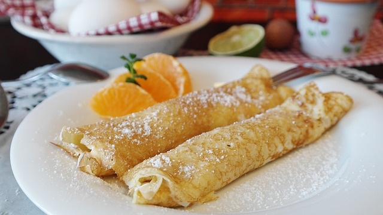
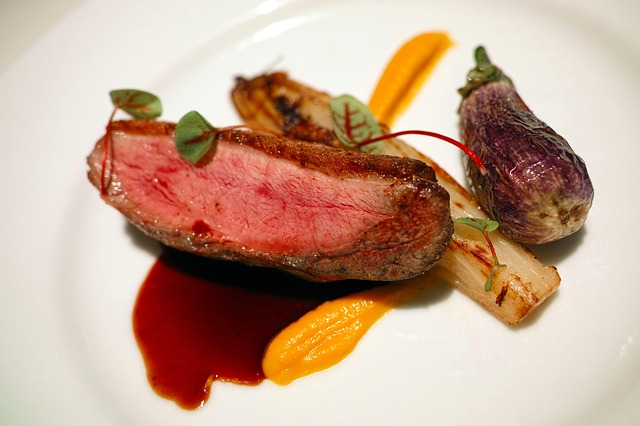

Food
Paris is known for its delicious food! From fromage to crepes, there is something for everyone.


Crepe Suzette
Crepe Suzette has so many crepes for 6-12 euros. There are the simple butter crepes and the extra fancy ham, cheese, and egg crepes. This is definitely a spot you check out when you are hungry. Come with a small group so that you can sample all the crepes from everyone's plate!

Les Petites Bouchees
A cute little dinner spot in Les Marais. Food is served in petite plates and are surprisingly affordable for this trendy neighborhood. Located in a quiet street, this bistro is great for a simple, affordable night out. Locals love this spot as do tourists. Make sure you know basic French as the waiters and waitresses do not prefer to speak English here, nor do they try to.